这一课的 20 道题都以 What is a…? 开头：日记、邮票、天气预报、良心、保险、测谎仪、死刑……第一问要你用英语下定义，后面再追问你的经历或看法。下定义看起来简单，其实是中国学生最卡的一类口语任务——我们知道这东西是什么，但一开口就变成翻译词典。这一课真正要练的是一个定义公式：它属于哪一类 + 它和同类的区别。学会这个，任何陌生词你都能解释给别人听。
再区分 — 它和同类的东西有什么不同…where you write down what happened each day and how you felt about it.
最后接追问 — 讲你自己I kept one in middle school, but these days my notes app does the same job, badly.
定义不出来时的救命句。
想不起它属于哪一类，就先说它用来干什么：It's basically what you use when… / It's something people buy so that…
先描述功能，类别词往往会在说的过程中自己冒出来。这和 Lesson 2 讲物品用途是同一个技巧。
02定义公式：类别词 + 关系词 + 特征
英语下定义几乎都是同一个结构。把类别词准备好，关系词选对，句子就自然出来了。
A · 一个公式，四种关系词
结构
什么时候用
本课例子
a + 类别 + that / which + 动词
定义一件东西、一个系统
A vending machine is a machine that sells snacks and drinks.
a + 类别 + where + 句子
定义一个地方，或一个「装东西」的东西
A theme park is a large park where all the rides follow one theme.
a + 类别 + who + 动词
定义一种人
An extraterrestrial is a being who comes from another planet.
when + 句子
定义一种状态、现象（口语里很常见）
Jet lag is when your body is still on the time zone you left.
最常见的错误：漏掉类别词，直接用 is to 或 is that 开头。 ✗ A diary is to write your feelings. ✓ A diary is a notebook where you write about your day and your feelings. 中文说「日记就是用来写心情的」很自然，但英语的 X is… 后面需要一个名词来接。
B · 本课 20 个词的类别词，提前备好
类别词
适用的题
a book / a notebook / a document
diary、autobiography、newspaper
a machine / a device
vending machine、lie detector、time machine
a system / a service / an arrangement
the Internet、insurance、credit card、lottery
a kind of sale / a place
garage sale、theme park
a prediction / a belief / a feeling
weather forecast、superstition、conscience
a punishment / a condition / a remedy
death penalty、jet lag、panacea
a box / a set of things
first-aid kit、stamp（a small printed label）
C · 让定义听起来像口语，不像词典
It's basically…
「说白了就是」—— 口语定义最自然的开头
It's a kind of… / a sort of…
「一种……」，承认分类不那么精确
In other words, …
换个说法再讲一遍，适合抽象词（conscience、panacea）
For example, …
定义完马上举例，对方就懂了
It's like… but…
用熟悉的东西类比：It's like a shop, but there's no shop assistant.
What you seeA night sky full of constellations. On the left, a man in a lab coat is looking through a big telescope. On the right, a fortune teller in a headscarf and long skirt is gazing into a crystal ball. Same stars, two completely different ways of reading them.
What it asks迷信是什么、你有没有迷信的想法、有的话是什么。课本脚注：superstition = 相信魔法或运气能影响你生活的观念。
Say it like this"Superstition is an irrational belief in magic. But it's difficult to be objective about this: 'my' magical beliefs are not superstitions, only 'yours'. Superstitious phenomena include, for some people, fortune telling, astrology, lucky or unlucky numbers, prophecy, reincarnation, an afterlife and divine intervention. But even people who reject all of these may still believe in things that don't seem to have an objective reality, like love or free will. The long and short of it is that we'd like to believe life isn't a complete mystery, and that some things are more predictable and controllable than they really are."
这段里最值得偷的两句：
① "My" beliefs are not superstitions, only "yours". —— 一句话点出人人都觉得自己理性，非常适合用来开启讨论；
② The long and short of it is that… —— 「总而言之」，课本脚注词，口语里用来收尾很自然。
superstition 和 superstitious 别混。superstition 是名词（一种迷信），superstitious 是形容词（迷信的）。
✓ It's just a superstition. / ✓ I'm a bit superstitious. ✗ I'm a bit superstition. —— Lesson 6 也考过同一个点。
04二十个问题：先定义，再追问
每张卡三段：What you see 照着图说，What it asks 说清定义要用什么类别词、后面在追问什么，Say it like this 给三档：① 一句定义 / ② 定义 + 回答追问 / ③ 再加一个具体例子或观点。
01
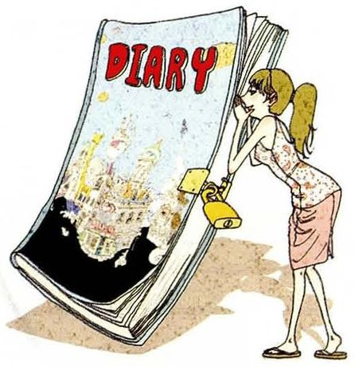
What is a diary? Do you keep one? What do you write about?
What you seeA huge book with DIARY on the cover and a padlock on the side. A young woman is leaning in and unlocking it — or peeking at someone else's.
What it asks类别词 notebook / book，关系词 where。追问：你记不记、写什么。注意 keep a diary 的动词是 keep，不是 write。
Say it like this①A diary is a notebook where you write about your day and how you feel. ②It's a private notebook where you record what happened each day. I kept one in middle school — mostly complaints about homework. ③It's a private record of your days, usually with a lock, because the whole point is that nobody else reads it. I don't keep one now, but I keep a lab notebook, which is a diary with the feelings taken out. Sometimes I think the feelings would be the more useful part.
02
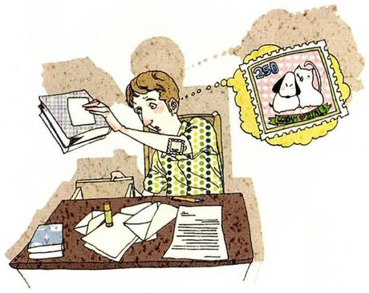
What is a stamp? Can you guess what the most expensive rare stamp is worth?
What you seeA man at a desk covered in envelopes and letters, holding up a stamp album. In a thought bubble above him is a single stamp with a picture of a dog on it — the one he's dreaming of finding.
What it asks类别词 a small printed label。追问是猜价格 —— 猜不准没关系，重点是用 I'd guess… / probably… 表达估计。
Say it like this①A stamp is a small printed label you stick on a letter to show you've paid for the postage. ②It's a small sticker that proves you've paid to send a letter. The rarest ones are worth millions — I'd guess several million dollars for the most famous one. ③It's a little printed label that shows you've paid postage, and for collectors it's a tiny piece of history. The most famous rare stamp, a one-cent stamp from British Guiana, sold for around eight million dollars a few years ago. Which is a strange thought, because almost nobody under thirty has bought a stamp this year.
03
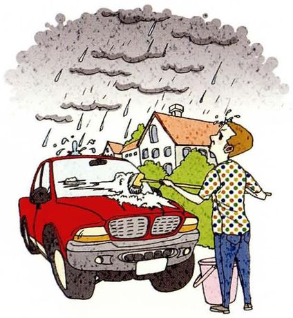
What is a weather forecast? How often is it right? What are some reasons for it being wrong?
What you seeA man with a sponge and a bucket washing his red car — while heavy black clouds pour rain all over it and him. He clearly trusted a forecast that said it would be dry.
What it asks类别词 a prediction。三个追问：准确率、出错的原因。原因题可以用 Lesson 10 的「表面 → 深层」结构。
Say it like this①A weather forecast is a prediction of what the weather will be like in the next few days. ②It's a prediction of the weather, based on data and computer models. Tomorrow's forecast is usually right; a week ahead, it's closer to a guess. It goes wrong because the atmosphere is chaotic — a small change grows fast. ③It's a prediction of the weather made from satellite data and computer models. For tomorrow it's right most of the time, which is why this man is so unlucky. It goes wrong for two reasons: small errors in the starting data grow over a few days, and local things like mountains or the sea make rain very patchy. So the forecast can be right for the city and wrong for your street.
04
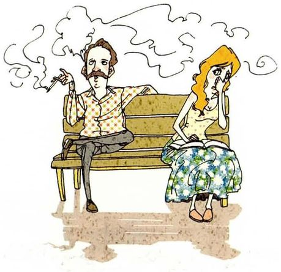
What is a conscience? Have you ever felt any pang of conscience? What did you do?
What you seeA man with a moustache lounging on a park bench, smoking, with clouds of smoke drifting everywhere. Next to him a woman is trying to read, holding her nose and looking miserable. He doesn't seem to feel any pang of conscience at all.
What it asks抽象词，类别词用 a feeling / a sense。课本脚注：pang = 突然、强烈而不舒服的痛或情绪。追问要讲一件真事。
Say it like this①A conscience is the inner sense that tells you whether what you're doing is right or wrong. ②It's your inner sense of right and wrong — the voice that makes you feel bad when you've hurt someone. I felt a pang once when I took credit for a classmate's idea, so I told the teacher afterwards. ③It's the part of you that judges what you do — in other words, the reason you feel uncomfortable before anyone else has noticed. The man in the picture doesn't seem to have one switched on. I felt a real pang a few years ago when I didn't reply to a friend who was having a hard time, because I was busy. I called her two weeks later and apologised, which helped her a little and me a lot.
05
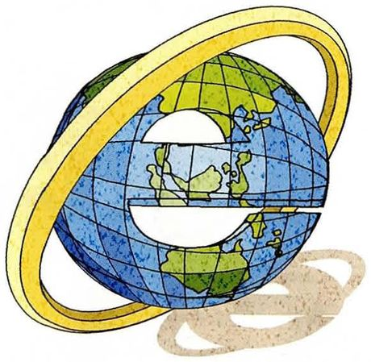
What is the Internet? How many hours do you spend on the Internet a day?
What you seeA blue globe with a big letter e cut into it and a golden ring orbiting around — the old web browser logo turned into the whole world.
What it asks类别词 a network / a system。追问是时间 —— 用 Lesson 12 的模糊限定词（roughly / on average）。
Say it like this①The Internet is a worldwide network that connects computers so they can share information. ②It's a global network of computers that lets people share information and talk to each other instantly. I spend roughly ten hours a day on it, but most of that is work. ③Technically it's a global network linking millions of computers. Practically, it's the place where most of my day happens. If you count research and messages, I'm online eight to ten hours a day. If you only count the hours I'd call wasted, it's about two — which is still two more than I'd like to admit.
06
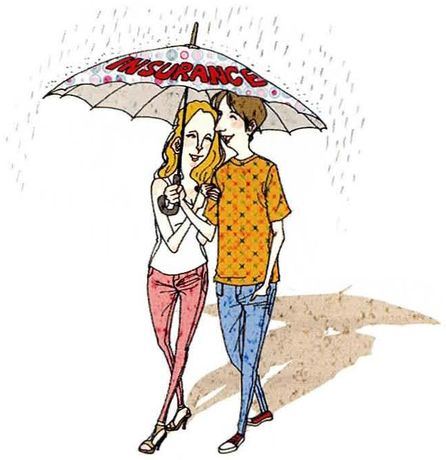
What is insurance? Do you have life insurance? Why or why not?
What you seeA young couple walking close together in the rain under one big umbrella with INSURANCE printed on it. The rain stops at the umbrella — that's the whole idea.
What it asks类别词 an arrangement，关系词 where。追问 Why or why not，必须给理由。
Say it like this①Insurance is an arrangement where you pay a company regularly, and it pays you if something bad happens. ②It's an arrangement where you pay a small amount regularly so that a company covers you if something goes wrong — an accident, an illness, a fire. I don't have life insurance yet, because nobody depends on my income. ③It's basically an umbrella, like in the picture: you pay a little every month so a big disaster doesn't land on you alone. I have health insurance through the university, but no life insurance, because life insurance protects the people who depend on you, and right now that's nobody. If I had children, it would be the first thing I'd buy.
07
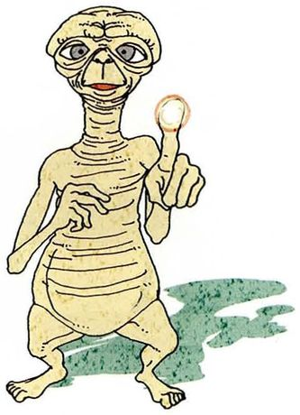
What is an extraterrestrial (ET)? Do you believe people who claim to have met any ETs?
What you seeThe famous alien from the film E.T. — wrinkly, big-eyed, holding up one glowing fingertip.
What it asks类别词 a being / a creature，关系词 who / that。追问是「信不信」—— 可以分开说「信外星生命存在」和「信有人见过」。
Say it like this①An extraterrestrial is a living being that comes from another planet. ②It's a creature from outside the Earth. I don't believe people who say they've met one — there's never any real evidence. ③It's any form of life that comes from beyond Earth. I'd separate two questions: do they exist somewhere? Probably — the universe is very big. Have people met them? I doubt it. The stories are always told by one person, at night, with no photos, in an age where everybody carries a camera.
08
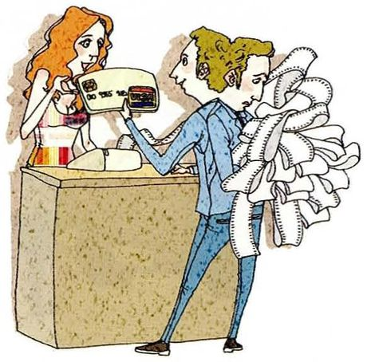
What is a credit card? How many credit cards do you have?
What you seeA man at a shop counter handing over a credit card, his other arm full of a long, tangled pile of receipts. The cashier is smiling; he looks less sure.
What it asksLesson 2 的例题就是信用卡，可以直接复用那里的表达。类别词 a plastic card。
Say it like this①A credit card is a plastic card that lets you buy things now and pay for them later. ②It's a card that lets you borrow money from a bank to pay for things, and you pay it back at the end of the month. I have one, which is plenty. ③It's a plastic card that lets you spend the bank's money and pay it back later — with high interest if you're late. I have one, and I use it like a debit card: I pay the whole balance every month. The man in the picture, with that pile of receipts, is what happens when you forget it's borrowed money.
09
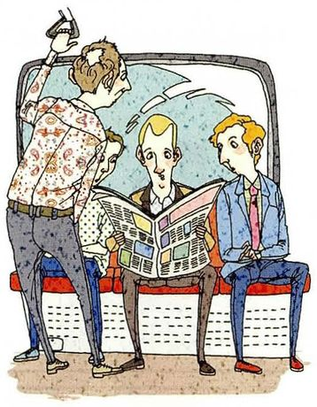
What is a newspaper? Do you subscribe to one or read it online?
What you seeA man on a train seat reading a big newspaper, while the two people next to him — and one standing over him — are all leaning in to read it too. One paper, four readers.
What it asks类别词 a publication。课本脚注：subscribe to = 按月付费定期收到报刊。注意 subscribe 后面一定有 to。
Say it like this①A newspaper is a daily publication that reports the news. ②It's a publication printed every day with news, opinions and adverts. I don't subscribe to a paper one — I read the news online, usually on my phone. ③It's a daily publication that reports and comments on the news. I don't subscribe to any, which is a little ironic, since I subscribe to three streaming services. I read news online for free, and I'm aware that "free" usually means someone else is choosing what I see.
10
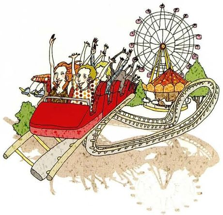
What is a theme park? What are some popular ones?
What you seeA red roller coaster car full of people with their arms in the air, a twisting track, and behind them a Ferris wheel and a carousel.
What it asks地方 → 关系词 where。注意 theme park 和 amusement park 的区别：前者全园围绕一个主题。
Say it like this①A theme park is a large park with rides and shows, all built around one theme. ②It's an amusement park where everything follows a theme — a film, a story, a world. Popular ones include Disneyland, Universal Studios and, in Korea, Everland and Lotte World. ③It's a big amusement park where the rides, food and buildings all follow one theme. The famous ones are Disneyland and Universal Studios; in China, Shanghai Disneyland and Chimelong. I went to Shanghai Disneyland once and spent most of the day queueing, which taught me that the theme of every theme park is really "waiting".
11
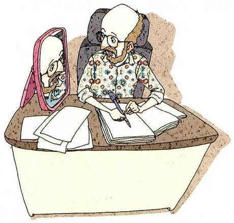
What is an autobiography? Will you ever write one?
What you seeA bald man with glasses and a beard writing at a desk covered in papers, with a small mirror propped up in front of him — he's literally looking at himself while he writes about himself.
What it asks类别词 a book。注意 auto- = 自己：autobiography（自传）vs biography（别人写的传记）。
Say it like this①An autobiography is a book that someone writes about their own life. ②It's the story of a person's life, written by that person. A biography is written by someone else. I doubt I'll ever write one — nothing in my life needs a whole book. ③It's a book about your own life, written by you — which is why the man in the picture needs a mirror. I don't think I'll write one, but if I did, I'd want to write it at seventy, not thirty, so I'd know which parts actually mattered. Most of what feels important at twenty-five probably won't make the final draft.
12
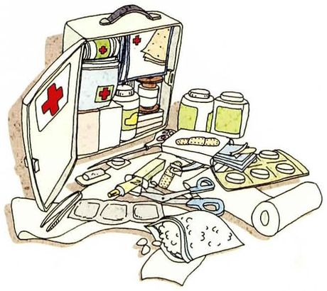
What is a first-aid kit? What would some of its contents be?
What you seeAn open white cabinet with red crosses on it, shelves of bottles inside, and spread out in front of it: bandages, tape, scissors, a thermometer, pills, cotton wool and a roll of gauze.
What it asksLesson 2 出现过。类别词 a box / a set。第二问是列举 —— 照着图点名就行。
Say it like this①A first-aid kit is a box of things you need to treat small injuries. ②It's a box of basic medical supplies for emergencies. It usually has plasters, bandages, antiseptic, scissors, tape and some painkillers. ③It's a set of basic medical supplies for treating small injuries before a doctor is needed. Inside you'd find plasters, gauze, bandages, tape, scissors, antiseptic wipes, a thermometer and painkillers. Ours at the lab also has an eye-wash bottle, which tells you something about the kind of accidents we expect.
13
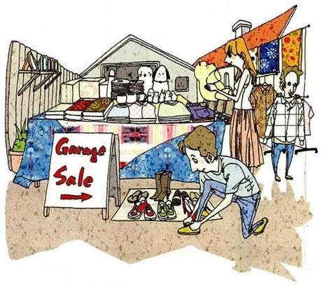
What is a garage sale? Have you ever gone to one or had one?
What you seeTables piled with folded clothes and stuffed toys outside a house, a sign saying Garage Sale →, a woman browsing the clothes rail, and a man crouching to try on a pair of second-hand shoes.
What it asks类别词 a sale，关系词 where。这在中国不常见，可以对比「闲鱼」这类二手平台。
Say it like this①A garage sale is a sale where people sell their old things outside their own house. ②It's when a family puts the things they don't need on tables outside their home and sells them cheaply. I've never been to one — they're not really a thing in China. ③It's a sale where a family sells its unwanted stuff from the garage or front yard, usually on a weekend. We don't have them in China, because most people live in flats — there's no garage. Our version is selling things online on second-hand apps. Same idea, but you lose the part where you chat with the neighbours.
14
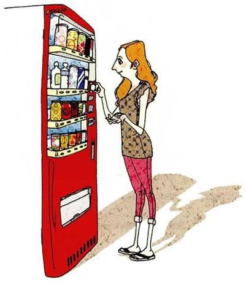
What is a vending machine? What do you buy most often from one?
What you seeA tall red vending machine full of bottles and cans, and a young woman standing in front of it, pressing a button.
What it asksLesson 14 讲过用法，这里只要定义。类别词 a machine，关系词 that。
Say it like this①A vending machine is a machine that sells drinks and snacks when you put in money. ②It's a machine that sells small things automatically — you pay, choose, and it drops the item out. I mostly buy bottled water or coffee. ③It's like a tiny shop without a shopkeeper: you pay, press a number, and it drops your drink. The one I use most is outside the lab, and I buy canned coffee from it at about four every afternoon. If it ever broke, I think my research would slow down noticeably.
15
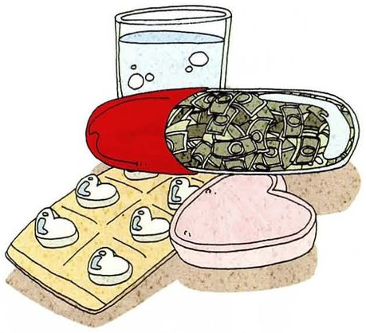
What is a panacea? Would you ever want to buy one?
What you seeA glass of water, a blister pack of pills, a heart-shaped box — and a giant red-and-white capsule stuffed full of banknotes. The joke: the "cure for everything" is mostly a way to make money.
What it askspanacea /ˌpænəˈsiːə/ = 万灵药、包治百病的东西。类别词 a remedy / a cure。第二问是个陷阱：它根本不存在。
Say it like this①A panacea is a cure that's supposed to solve every problem or illness. ②It's a remedy that claims to cure everything. I wouldn't buy one, because anything that claims to fix everything usually fixes nothing. ③It's a cure for every disease — in other words, something that doesn't exist. People also use it figuratively: "Money isn't a panacea." If someone offered to sell me one, I'd want to know why the price was so high, and the picture already answers that: the capsule is full of money, just not mine.
16
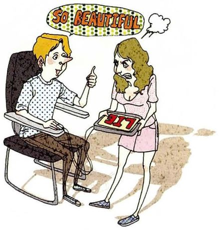
What is a lie detector? Explain how it functions. Is it always accurate?
What you seeA man strapped into a lie-detector chair, giving a thumbs up and saying So beautiful! to a woman. She's holding the machine's readout, which says LIE — and she looks furious.
What it asks类别词 a machine。第二问要讲原理：测心率、血压、呼吸、出汗。第三问答 no，并给理由。
Say it like this①A lie detector is a machine that tries to tell whether someone is lying. ②It's a machine, also called a polygraph, that measures your heart rate, breathing and sweating while you answer questions. It isn't always accurate, because nervous people can look guilty. ③It's a machine — a polygraph — that records your heart rate, blood pressure, breathing and how much your skin sweats. The idea is that lying makes you stressed, and stress shows up in your body. But it measures stress, not lies, so an honest nervous person can fail and a calm liar can pass. That's why many courts don't accept the results. Though in this picture, I'd say the machine got it right.
17
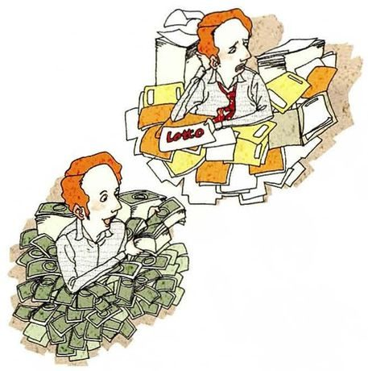
What is a lottery? Can winning ever have negative consequences?
What you seeThe same red-haired man twice. Bottom left: grinning, sitting in a mountain of banknotes. Top right: miserable, buried in a pile of papers and bills, with a Lotto ticket among them. First the win, then what came after.
What it asks类别词 a game / a form of gambling。第二问答 yes，并举具体后果。Lesson 7、15、24 都碰过彩票，这里重点是「中奖的坏处」。
Say it like this①A lottery is a game where you buy a ticket and win money if your numbers are drawn. ②It's a form of gambling where you pick numbers and hope they come up. Yes, winning can be bad — some winners spend it all and end up in debt. ③It's a form of gambling where a few people win a lot and everyone else pays for it. Winning can definitely go wrong, and the picture shows exactly how: you suddenly have money but no habits for handling it, plus relatives and friends you didn't know you had. Plenty of big winners are broke within a few years, because money arrived faster than judgement.
18
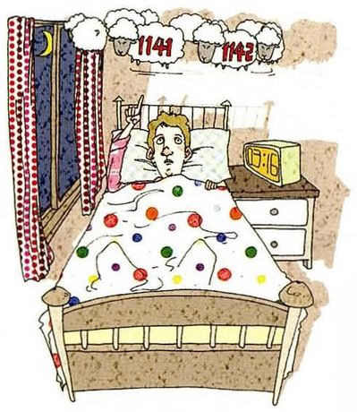
What is jet lag? What are some symptoms?
What you seeA man lying in bed with his eyes wide open, the moon in the window. Above him, sheep jump past numbered 1141 and 1142 — he has been counting for hours and still can't sleep.
What it asks状态 → 用 when 定义最自然。第二问是列举症状。注意 jet lag 不可数，不说 a jet lag。
Say it like this①Jet lag is when you feel tired and confused after flying across several time zones. ②It's the tiredness you get after a long flight across time zones, because your body clock is still on the old time. The symptoms are not being able to sleep at night, feeling sleepy in the day, headaches and poor concentration. ③It's when your body is still living in the time zone you left. The classic symptom is in the picture: lying awake at three in the morning counting sheep, then falling asleep in the middle of the afternoon. You also get headaches, no appetite and a foggy head. The rule I've heard is about one day to recover for each hour of time difference.
19
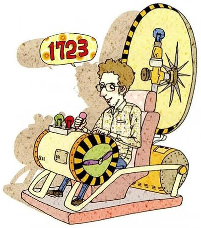
What is a time machine? What would you like to see in the past or future?
What you seeA man in glasses sitting in a strange contraption full of dials, levers and a big wheel, with a speech bubble showing the year 1723 — he's just set the destination.
What it asks类别词 an imaginary machine。第二问是假设 → 用 I'd like to… / I would…，Lesson 24 的虚拟语气在这里又用上了。
Say it like this①A time machine is an imaginary machine that can take you into the past or the future. ②It's a machine from science fiction that lets you travel through time. I'd like to see the future — maybe fifty years from now, to find out whether we solved climate change. ③It's a machine that only exists in science fiction: you set a date and travel there. If I had one, I'd go back to my grandparents' village in the 1960s, just to see what their lives were really like, instead of the version they tell at dinner. The future is tempting too, but I think I'd be afraid of what I found.
20
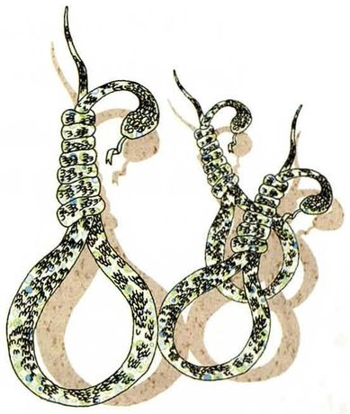
What is the death penalty? Do you approve of it? Why or why not?
What you seeTwo hangman's nooses, drawn in heavy dark rope. Nothing else in the picture.
What it asks课本脚注：death penalty = 依法处决，也叫 capital punishment。这是全课最严肃的观点题：必须表态、给理由、加让步，语气保持冷静。
Say it like this①The death penalty is when the state executes someone as punishment for a very serious crime. ②It's the legal punishment of executing someone, also called capital punishment. I'm against it, mainly because courts sometimes convict the wrong person, and an execution can't be undone. ③It's a legal punishment where the state executes a person for a very serious crime. My view is that I'm uneasy with it. I understand why victims' families want it, and for the very worst crimes I can feel the pull. But every justice system makes mistakes, and this is the only punishment you can't correct when you discover one. So for me the question isn't whether some people deserve it — it's whether we trust the system enough never to be wrong.
It's hard to be objective about yourself. 反义 subjective
客观的
astrology
/əˈstrɑːlədʒi/
I don't believe in astrology. 占星术。天文学是 astronomy，别混
占星术
prophecy
/ˈprɑːfəsi/
an old prophecy
预言
divine
/dɪˈvaɪn/
divine intervention
神的
intervention
/ˌɪntərˈvenʃn/
government intervention
干预
secular
/ˈsekjələr/
a secular society 世俗的、非宗教的
世俗的
dogma
/ˈdɔːɡmə/
political dogma 不容置疑、但没有证据的信条
教条
the long and short of it
/ðə lɔːŋ ən ʃɔːrt əv ɪt/
The long and short of it is… 总而言之。用来收尾
总之
pang
/pæŋ/
a pang of conscience / a pang of guilt
一阵（痛楚）
subscribe to
/səbˈskraɪb tuː/
subscribe to a newspaper / a channel
订阅
death penalty
/ˈdeθ ˌpenəlti/
abolish the death penalty 也叫 capital punishment
死刑
B · 本课 20 题里的核心名词
词
音标
课上怎么用
中文
conscience
/ˈkɑːnʃəns/
a guilty conscience 读音易错，sc 发 /ʃ/。别和 conscious 混
良心
forecast
/ˈfɔːrkæst/
the weather forecast
预报
extraterrestrial
/ˌekstrətəˈrestriəl/
extraterrestrial life
外星生物
autobiography
/ˌɔːtəbaɪˈɑːɡrəfi/
write an autobiography auto- = 自己
自传
panacea
/ˌpænəˈsiːə/
There's no panacea for stress.
万灵药
polygraph
/ˈpɑːliɡræf/
take a polygraph test lie detector 的正式名称
测谎仪
jet lag
/ˈdʒet læɡ/
I'm still jet-lagged. 不可数，不说 a jet lag
时差反应
time zone
/ˈtaɪm zoʊn/
cross six time zones
时区
C · 下定义用的词块
表达
音标
用法
中文
It's basically…
/ɪts ˈbeɪsɪkli/
口语定义最自然的开头
说白了就是
a kind of / a sort of
/ə kaɪnd əv/
It's a kind of notebook.
一种
in other words
/ɪn ˈʌðər wɜːrdz/
换个说法再解释一次
换句话说
figuratively
/ˈfɪɡjərətɪvli/
People use it figuratively. 比喻地用
比喻地
also called
/ˈɔːlsoʊ kɔːld/
a polygraph, also called a lie detector
也叫
as opposed to
/əz əˈpoʊzd tuː/
a biography, as opposed to an autobiography
与……相对
06老师大概率会问的问题
这一课老师很可能会临时说一个词，让你现场下定义。准备好公式比准备好答案更重要。
Can you define a word I give you — say, "homesick"?
Homesick is a feeling — the sadness you get when you're away from home and you miss your family and your normal life. It's strongest at night and on holidays. For example, I was very homesick in my first month at university, mostly at dinner time.
严格按公式：类别（a feeling）→ 特征 → 一个具体例子。临场题用公式，就不会卡。
Do you have any superstitious beliefs?
A few, and I know they're irrational. I avoid the number four, because in Chinese it sounds like the word for death, and I'd never choose a fourth-floor flat if I had a choice. I also wear the same shirt to every important presentation. I don't believe either one works — but I don't want to find out what happens if I stop.
先承认不理性，再讲两个具体例子，最后一句自嘲。和课本例题「my beliefs are not superstitions, only yours」形成呼应。
Which of these twenty things will disappear in the next twenty years?
Stamps and printed newspapers, probably — or at least they'll become collectors' items. Vending machines might survive, because they're getting smarter. And the death penalty may disappear in more countries; the trend has been moving that way for decades.
挑三个有代表性的、给出理由，而不是挨个说。最后一项涉及社会趋势，显示你能把日常词汇和大话题连起来。
Is a lie detector a good idea in job interviews?
No. It measures nerves, not honesty, and almost everyone is nervous in a job interview. You'd end up rejecting honest anxious people and hiring calm, confident liars — which is probably the opposite of what the company wants.
一句结论 + 一个机制解释 + 一个反直觉的后果。这种结构在观点题里最有说服力。
What's the hardest thing about defining something in English?
Finding the category word. I always know what something does, but not what it is. So I've learned to start with the function — "it's what you use when…" — and let the category come later, if it comes at all.
The past, because I'd understand what I was looking at. If I went a hundred years into the future, I think I'd be like someone from 1920 looking at a smartphone — completely lost. In the past I'd at least know how the story ends, which is a strange kind of comfort.
用一个类比（1920 年的人看手机）解释选择，让一个假设题变得具体可感。
07这节课最容易犯的错
这一课的错误集中在定义句的结构上：缺类别词、关系词用错、可数不可数搞混。
✗A diary is to write your feelings. ✓A diary is a notebook where you write about your feelings.
英语定义需要一个类别名词。中文「X 就是用来……的」不能直译成 is to。
✗A theme park is a park which you can ride many things. ✓A theme park is a park where you can go on lots of rides.
从句里主语和宾语都齐全时，地点要用 where，不用 which。另外「坐游乐设施」是 go on a ride。
✗I have a jet lag. ✓I have jet lag. / I'm jet-lagged.
jet lag 不可数，不加 a。
✗I write diary every day. ✓I keep a diary. / I write in my diary every day.
「记日记」固定搭配是 keep a diary；diary 可数，要有冠词。
✗I subscribe a newspaper. ✓I subscribe to a newspaper.
subscribe 是不及物动词，后面必须接 to。
✗I don't agree the death penalty. ✓I don't agree with the death penalty. / I don't approve of it.
agree with + 观点 / 做法；approve of + 做法。课本用的是 approve of。
✗The weather forecast is not correct always. ✓The weather forecast isn't always right.
always 放在 be 动词之后、形容词之前。说「预报准」英语更常用 right 或 accurate。